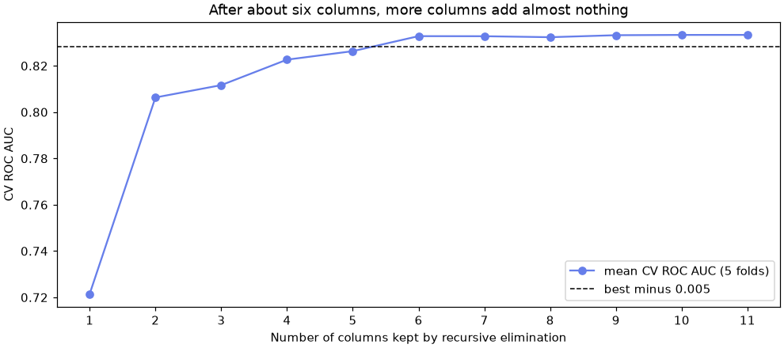
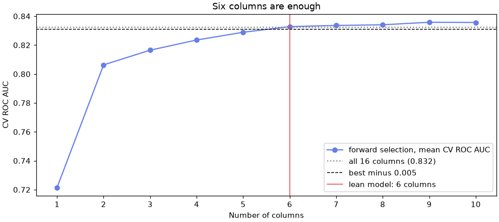

🎒 Lesson 2.4: Feature Selection
Pack light: find the few columns that carry a model's accuracy, drop the duplicates and the dead weight, and do it without fooling yourself.
🎯 Learning Objectives
By the end of this lesson, you will be able to:
- Explain what feature selection buys you (simpler, cheaper, sturdier models) and what it usually does not (big accuracy gains)
- Find redundant features with correlations, exact relationships and cross-tabulations
- Use filter (
SelectKBest), wrapper (RFECV,SequentialFeatureSelector) and embedded (L1,SelectFromModel) methods, and say what each can miss - Keep selection inside a
Pipelineso cross-validation stays honest, and show what happens when it is not - Choose the smallest feature set whose cross-validated score is within a tolerance of the best
In This Lesson
🧭 Packing for the Trail
Lesson 2.3 added columns. This lesson takes them away. Pinecrest's churn table has 16 candidate feature columns, and you could keep adding more. Do you need them all? Usually not, and every column has a cost: it must be collected, cleaned and monitored in production, it can break when an upstream system changes, and it makes the model harder to explain.
💡 Mental Model: An Ultralight Backpack
Experienced hikers weigh every item before a long trip. Two stoves? One goes home: that is a redundant feature, carrying the same information as another. The camp chair you never sit in? Home: an irrelevant feature. But the water filter stays, even though you use it only twice a day. The goal is not the lightest pack, it is the lightest pack that still gets you to the end of the trail. In model terms: the smallest feature set that keeps the score.
Feature selection rarely makes a good model dramatically more accurate. Its real benefits are a simpler model (fewer inputs to collect, explain and monitor), a sturdier one (fewer places for noise and drift to creep in), and, when there are many more columns than rows, protection from fitting noise. There are three families of methods:
| Family | How it works | Strength | Blind spot | scikit-learn |
|---|---|---|---|---|
| Filter | Scores each column against the target, alone | Very fast | Ignores the model and teamwork between columns | SelectKBest, VarianceThreshold |
| Wrapper | Tries subsets of columns with the real model | Judges columns as the model uses them | Slow: many fits | RFECV, SequentialFeatureSelector |
| Embedded | Selection happens while the model trains | One fit | Tied to one model type | L1 penalty, SelectFromModel |
🤔 Why This Matters
Every later module meets this problem in some form: which coefficients matter in a regularized regression (3.2), which features a forest relies on (5.2, 7.1), how to compress many columns into a few (Module 9). The habits you build here (decide with cross-validation, keep the choice inside the pipeline, prefer the smaller model when scores tie) carry through all of them.
🧹 Free Wins: Redundant Columns
Load the churn table and the standard split. This lesson uses all 11 numeric columns, including email_opens_90d, which has gaps (you will impute it inside each pipeline, as in Lesson 2.1).
import numpy as np
import pandas as pd
import matplotlib.pyplot as plt
from sklearn.model_selection import train_test_split
pd.set_option("display.width", 150)
customers = pd.read_csv("data/customers_churn.csv")
numeric = ["tenure_months", "orders_12m", "spend_12m", "avg_order_value", "days_since_last_order",
"returns_12m", "return_rate", "support_tickets_12m", "discount_share", "app_user", "email_opens_90d"]
train, test = train_test_split(customers, test_size=0.25, stratify=customers["churned"], random_state=42)
X_train, y_train = train[numeric], train["churned"]
X_test, y_test = test[numeric], test["churned"]
print(X_train.shape, X_test.shape)Output
(4500, 11) (1500, 11)Start with the cheapest check: which pairs of columns move together? The code keeps the upper triangle of the correlation matrix (each pair once) and lists the strong pairs.
corr = X_train.corr()
upper = corr.where(np.triu(np.ones(corr.shape, dtype=bool), k=1)).stack()
print(upper[upper.abs() > 0.3].sort_values(key=abs, ascending=False).round(2))Output
returns_12m return_rate 0.68
orders_12m spend_12m 0.57
spend_12m avg_order_value 0.49
orders_12m days_since_last_order -0.41
spend_12m returns_12m 0.39
avg_order_value discount_share -0.34
orders_12m avg_order_value -0.32
returns_12m 0.31
spend_12m return_rate 0.31
dtype: float64The strongest pair is the two views of returns (0.68), then spend with orders, spend with average order value, and a long gap since the last order with fewer orders: all expected. None of these correlations is close to 1, so no column is a copy of another. But correlation only sees straight-line relationships between two columns. Lesson 2.3 found a three-column relationship hiding in plain sight:
rebuilt = X_train["orders_12m"] * X_train["avg_order_value"]
print("largest gap between spend and orders x AOV:", (X_train["spend_12m"] - rebuilt).abs().max().round(2))Output
largest gap between spend and orders x AOV: 0.09Nine cents, from rounding the average to the cent. Any one of spend_12m, orders_12m and avg_order_value can be rebuilt from the other two, so one of them is redundant. Correlation alone would never have told you. The two category columns hide a similar relationship:
print(train.groupby("home_store")["region"].nunique())
print(train.groupby("loyalty_tier")[["spend_12m", "tenure_months"]].median())Output
home_store
Asheville 1
Bend 1
Boise 1
Flagstaff 1
Online 6
Name: region, dtype: int64
spend_12m tenure_months
loyalty_tier
Basic 253.230 18.0
Gold 1350.765 71.0
Silver 741.960 59.0Every physical store belongs to exactly one region, so for store shoppers region repeats home_store; only for online shoppers does it add anything. And loyalty_tier follows spend and tenure closely: Pinecrest assigns tiers from those two numbers. Redundant columns do not usually hurt accuracy much, but they split credit between near-copies, make coefficients unstable (Lesson 1.1 warned about this) and add things to maintain.
✅ Domain Knowledge First
The fastest selection method is asking "how was this column made?". A column computed from other columns (an average, a ratio, a tier, a region lookup) is a candidate to drop before any algorithm runs. You will test that idea with cross-validation in the project.
🔬 Filter Methods: One Feature at a Time
A filter gives each column a score for how strongly it relates to the target, on its own, and keeps the best. Two common scores:
f_classif, the ANOVA F-test: how far apart are the churners' and stayers' averages, relative to the spread? Fast, but it only sees differences in the mean, roughly a straight-line effect.mutual_info_classif, mutual information: how much does knowing the column reduce uncertainty about the target? Zero means independent. It detects any kind of relationship, including U-shapes, but it is estimated from each row's nearest neighbors, so it is noisy, needs arandom_state, and can round small effects down to exactly 0.
from sklearn.feature_selection import f_classif, mutual_info_classif
from sklearn.impute import SimpleImputer
X_filled = SimpleImputer(strategy="median").set_output(transform="pandas").fit_transform(X_train)
f_scores, _ = f_classif(X_filled, y_train)
mi_scores = mutual_info_classif(X_filled, y_train, random_state=42)
filters = pd.DataFrame({"F": f_scores, "MI": mi_scores}, index=numeric)
filters["F_rank"] = filters["F"].rank(ascending=False).astype(int)
filters["MI_rank"] = filters["MI"].rank(ascending=False).astype(int)
print(filters.sort_values("F_rank").round(4))Output
F MI F_rank MI_rank
days_since_last_order 735.4249 0.0641 1 1
discount_share 196.5015 0.0118 2 6
spend_12m 174.5598 0.0190 3 4
orders_12m 156.1053 0.0206 4 3
app_user 64.2232 0.0145 5 5
support_tickets_12m 41.8948 0.0000 6 10
email_opens_90d 37.1523 0.0000 7 10
returns_12m 15.5411 0.0064 8 8
tenure_months 14.9306 0.0329 9 2
avg_order_value 8.5355 0.0106 10 7
return_rate 1.1013 0.0000 11 10Both put days_since_last_order first. Look at where they disagree. tenure_months is near the bottom for F but second for mutual information: tenure has the U-shape from Lesson 2.3, so churners' average tenure is close to the stayers', and the F-test sees little. Mutual information sees that both very short and very long tenures mean risk. Going the other way, mutual information gives support_tickets_12m and email_opens_90d exactly 0, although the F-test finds clear differences: their effects are modest, and the neighbor-based estimate rounds them away. And neither score knows about teamwork: support_tickets_12m matters mostly for customers without the app, and a one-column score only sees the diluted average.
To use a filter, put it in a pipeline as SelectKBest, which keeps the k best-scoring columns. In a pipeline the scores are recomputed on each training fold, so the validation fold never influences the choice.
from functools import partial
from sklearn.feature_selection import SelectKBest
from sklearn.linear_model import LogisticRegression
from sklearn.model_selection import StratifiedKFold, cross_val_score
from sklearn.pipeline import make_pipeline
from sklearn.preprocessing import StandardScaler
cv = StratifiedKFold(n_splits=5, shuffle=True, random_state=42)
mi = partial(mutual_info_classif, random_state=42)
def churn_pipe(*steps):
return make_pipeline(SimpleImputer(strategy="median"), StandardScaler(), *steps, LogisticRegression())
for name, pipe in [("all 11 columns", churn_pipe()),
("best 6 by F", churn_pipe(SelectKBest(f_classif, k=6))),
("best 6 by MI", churn_pipe(SelectKBest(mi, k=6)))]:
scores = cross_val_score(pipe, X_train, y_train, cv=cv, scoring="roc_auc")
print(f"{name:15s} CV ROC AUC {scores.mean():.3f}")Output
all 11 columns CV ROC AUC 0.833
best 6 by F CV ROC AUC 0.824
best 6 by MI CV ROC AUC 0.813Six columns chosen by F lose about 0.01 AUC; by mutual information they lose about 0.02, even though mutual information is the "smarter" score. It keeps tenure, whose U-shape a logistic regression cannot use anyway (unless you engineer it, as in Lesson 2.3). A filter knows nothing about the model that comes after it. That is its speed and its weakness.
💡 functools.partial
SelectKBest calls its scoring function with just (X, y). partial makes a version of mutual_info_classif with random_state=42 already filled in, so the selector can call it the usual way and every run gives the same scores.
🔁 Wrapper Methods: Let the Model Judge
A wrapper tries subsets of columns with the actual model and keeps what scores best. Two strategies are built in:
- Recursive feature elimination (
RFE, andRFECVwith cross-validation): fit the model, drop the column with the smallest weight, refit, repeat. The weights must be comparable, so scale first. - Sequential feature selection (
SequentialFeatureSelector): start empty and, at each step, add the column that raises the cross-validated score most (forward), or start full and remove (backward).
from sklearn.feature_selection import RFECV
rfecv = RFECV(LogisticRegression(), cv=cv, scoring="roc_auc")
rfe_pipe = make_pipeline(SimpleImputer(strategy="median"), StandardScaler(), rfecv).set_output(transform="pandas")
rfe_pipe.fit(X_train, y_train)
curve = pd.Series(rfecv.cv_results_["mean_test_score"], index=rfecv.cv_results_["n_features"])
print("RFECV keeps", rfecv.n_features_, "columns")
print(curve.round(4).to_string())
fig, ax = plt.subplots(figsize=(9, 4), layout="constrained")
ax.plot(curve.index, curve.values, marker="o", color="#667eea", label="mean CV ROC AUC (5 folds)")
ax.axhline(curve.max() - 0.005, color="black", linestyle="--", linewidth=1, label="best minus 0.005")
ax.set_xticks(curve.index)
ax.set_xlabel("Number of columns kept by recursive elimination")
ax.set_ylabel("CV ROC AUC")
ax.set_title("After about six columns, more columns add almost nothing")
ax.legend()
plt.show()Output
RFECV keeps 11 columns
1 0.7215
2 0.8063
3 0.8116
4 0.8226
5 0.8263
6 0.8328
7 0.8328
8 0.8323
9 0.8332
10 0.8333
11 0.8333
Read the curve, not just n_features_. RFECV keeps the count with the highest mean score, and with a flat plateau that can be the full set, won by a ten-thousandth. The differences on the plateau are far smaller than the spread between folds. A sensible rule: take the smallest set within a small tolerance of the best (here 0.005 AUC). You will apply it in the project.
SequentialFeatureSelector can apply a tolerance for you. With n_features_to_select="auto" and tol=0.002, forward selection stops as soon as the next column adds less than 0.002 to the CV score:
from sklearn.feature_selection import SequentialFeatureSelector
sfs = SequentialFeatureSelector(LogisticRegression(), n_features_to_select="auto", tol=0.002,
direction="forward", cv=cv, scoring="roc_auc")
sfs_pipe = make_pipeline(SimpleImputer(strategy="median"), StandardScaler(), sfs).set_output(transform="pandas")
sfs_pipe.fit(X_train, y_train)
forward_six = list(sfs.get_feature_names_out())
print(forward_six)
scores = cross_val_score(churn_pipe(SequentialFeatureSelector(LogisticRegression(), n_features_to_select="auto",
tol=0.002, cv=cv, scoring="roc_auc")),
X_train, y_train, cv=cv, scoring="roc_auc")
print(f"forward selection inside CV: {scores.mean():.3f}")Output
['orders_12m', 'days_since_last_order', 'support_tickets_12m', 'discount_share', 'app_user', 'email_opens_90d']
forward selection inside CV: 0.832Forward selection stops at six columns and keeps the full model's score. Notice what it picked: support_tickets_12m and app_user, the pair that only matters together. A wrapper judges columns by how they help the model alongside the columns already chosen, so it can find teamwork that filters miss. The price is time: forward selection fitted the model hundreds of times. With 11 columns that takes seconds; with 500 it takes a long time.
⚠️ Two Cross-Validations
The second score comes from cross-validating the whole selection procedure: each outer fold runs its own forward selection (with its own inner folds) on its training part only. That is the honest estimate of "select, then fit". The selector's own internal scores are optimistic, because they are the winners of a competition run on those very folds.
🧲 Embedded Methods: L1 Regularization
An embedded method selects while it trains. The classic is L1 regularization (also called the Lasso penalty): the model is charged a price for the total size of its weights, and the cheapest way to pay is to set the weights of weak columns to exactly zero. In scikit-learn's LogisticRegression, l1_ratio=1 asks for a pure L1 penalty, and C controls its strength: a smaller C means a heavier penalty and more zeros. The liblinear solver handles L1 well on data this size. Lesson 3.2 covers regularization properly; here it is a selection tool.
rows, zeroed = [], {}
for C in [0.005, 0.01, 0.02, 0.05, 1.0]:
l1_pipe = churn_pipe().set_params(logisticregression=LogisticRegression(l1_ratio=1, solver="liblinear", C=C))
auc = cross_val_score(l1_pipe, X_train, y_train, cv=cv, scoring="roc_auc").mean()
weights = l1_pipe.fit(X_train, y_train)[-1].coef_[0]
zeroed[C] = [col for col, w in zip(numeric, weights) if w == 0]
rows.append({"C": C, "kept": int((weights != 0).sum()), "cv_auc": round(auc, 4)})
print(pd.DataFrame(rows).to_string(index=False))
print("zero at C=0.05:", zeroed[0.05])
print("zero at C=0.01:", zeroed[0.01])Output
C kept cv_auc
0.005 2 0.7955
0.010 6 0.8175
0.020 8 0.8301
0.050 8 0.8333
1.000 11 0.8334
zero at C=0.05: ['avg_order_value', 'returns_12m', 'return_rate']
zero at C=0.01: ['tenure_months', 'orders_12m', 'avg_order_value', 'returns_12m', 'return_rate']Read from the bottom up. With a weak penalty (C=1.0) every column survives. At C=0.05 three columns drop out with no loss in AUC, and they are the redundant ones you found by hand: avg_order_value (spend divided by orders), returns_12m and return_rate (two views of returns). Squeeze harder (C=0.01) and genuinely useful columns such as tenure_months and orders_12m start to go, and the score falls. set_params(logisticregression=...) swaps the pipeline's last step by its name, the lowercase class name that make_pipeline gives it.
To use L1 purely as a selector in front of another model, wrap it in SelectFromModel, which keeps the columns with nonzero weights:
from sklearn.feature_selection import SelectFromModel
l1_selector = SelectFromModel(LogisticRegression(l1_ratio=1, solver="liblinear", C=0.05))
l1_select_pipe = churn_pipe(l1_selector).set_output(transform="pandas").fit(X_train, y_train)
print(list(l1_selector.get_feature_names_out()))Output
['tenure_months', 'orders_12m', 'spend_12m', 'days_since_last_order', 'support_tickets_12m', 'discount_share', 'app_user', 'email_opens_90d']Tree models offer another embedded option: SelectFromModel can read a forest's feature_importances_. Exercise 3 tries it and shows a catch: a selector should think like the model that comes after it.
🚰 Selection Can Leak
Here is the most important experiment in this lesson. Build a dataset of pure noise: 200 "customers", 5,000 random columns, and a random yes/no target. No model can genuinely predict anything here; honest accuracy is a coin flip, 50%. Now select the 20 columns most related to the target, and cross-validate a model on them, in two ways.
def noise_experiment(seed):
rng = np.random.default_rng(seed)
X_noise = rng.normal(size=(200, 5000))
y_noise = rng.integers(0, 2, size=200)
# Wrong: select on ALL rows, then cross-validate the model on the chosen columns
chosen = SelectKBest(f_classif, k=20).fit(X_noise, y_noise)
leaky = cross_val_score(LogisticRegression(), chosen.transform(X_noise), y_noise, cv=cv).mean()
# Right: selection is a pipeline step, so it is redone inside every training fold
honest = cross_val_score(make_pipeline(SelectKBest(f_classif, k=20), LogisticRegression()),
X_noise, y_noise, cv=cv).mean()
return {"seed": seed, "select first, then CV": leaky, "select inside CV": honest}
noise = pd.DataFrame([noise_experiment(seed) for seed in range(42, 47)]).set_index("seed")
print(noise.round(3))
print(noise.mean().round(3).to_string())Output
select first, then CV select inside CV
seed
42 0.825 0.595
43 0.780 0.545
44 0.820 0.515
45 0.770 0.520
46 0.795 0.460
select first, then CV 0.798
select inside CV 0.527The leaky version reports around 80% accuracy on pure noise, on every one of five fresh datasets. With 5,000 random columns, some will line up with the random target by chance, and choosing them with all 200 rows bakes that chance alignment into every validation fold. The honest version averages close to a coin flip; single runs wander a few points either way, because each validation fold has only 40 rows. Same data, same model, one line of difference.
🛑 Any Choice Made with the Labels Is Part of the Model
Selecting columns, choosing thresholds (Lesson 2.3), tuning settings (Lesson 6.2): if a step looks at y, it is learning, and it must happen inside each training fold, never before the split. This leak is easy to miss in real projects because the result looks plausible. 80% sounds like a decent model, not like noise.
⚠️ Common Mistakes
1. Missing Values Reach the Selector
SelectKBest(f_classif, k=5).fit(X_train, y_train)Error
ValueError: Input X contains NaN.
SelectKBest does not accept missing values encoded as NaN natively. For supervised learning, you might want to consider sklearn.ensemble.HistGradientBoostingClassifier and Regressor which accept missing values encoded as NaNs natively. Alternatively, it is possible to preprocess the data, for instance by using an imputer transformer in a pipeline or drop samples with missing values. See https://scikit-learn.org/stable/modules/impute.html You can find a list of all estimators that handle NaN values at the following page: https://scikit-learn.org/stable/modules/impute.html#estimators-that-handle-nan-valuesWhat it means: email_opens_90d has gaps, and the F-test cannot score a column with missing values. Fix: put a SimpleImputer in the pipeline before the selector, as churn_pipe does.
2. Recursive Elimination with a Model That Has No Weights
from sklearn.feature_selection import RFE
from sklearn.neighbors import KNeighborsClassifier
RFE(KNeighborsClassifier(), n_features_to_select=5).fit(X_filled, y_train)Error
ValueError: when `importance_getter=='auto'`, the underlying estimator KNeighborsClassifier should have `coef_` or `feature_importances_` attribute. Either pass a fitted estimator to feature selector or call fit before calling transform.What it means: RFE drops the column with the smallest coef_ or feature_importances_, and k-nearest neighbors (Lesson 4.1) has neither. Fix: use SequentialFeatureSelector, which works with any model because it only needs scores, or pass a custom importance_getter.
3. L1 Selection on Unscaled Columns
l1 = LogisticRegression(l1_ratio=1, solver="liblinear", C=0.02)
for name, pipe in [("scaled", make_pipeline(SimpleImputer(strategy="median"), StandardScaler(), l1)),
("unscaled", make_pipeline(SimpleImputer(strategy="median"), l1))]:
weights = pipe.fit(X_train, y_train)[-1].coef_[0]
print(f"{name:9s} keeps discount_share: {weights[numeric.index('discount_share')] != 0}, "
f"keeps avg_order_value: {weights[numeric.index('avg_order_value')] != 0}")Output (no error, and that is the problem)
scaled keeps discount_share: True, keeps avg_order_value: False
unscaled keeps discount_share: False, keeps avg_order_value: TrueWhat happened: the penalty charges for the size of each weight. discount_share runs from 0 to 1, so it needs a large weight to have any effect, and the penalty kills it, even though it is the second-best predictor in the table. avg_order_value is in dollars, needs only a tiny weight, and survives although it is redundant. Without scaling, L1 selects by units, not by usefulness. Fix: always scale before an L1 penalty (and before RFE, which compares weights too).
4. Reading "Dropped" as "Does Not Matter"
No code this time, because the mistake is in the sentence you write afterwards. L1 dropped avg_order_value. That does not mean average order value has nothing to do with churn; it means that, given spend and orders, it adds nothing new. Drop spend_12m instead and avg_order_value may well be kept. Selection results describe this model with these other columns, not which customer traits cause churn. Treat them the way Lesson 1.1 treated coefficients: a useful first impression.
🛠️ Project: The Lean Churn Model
Pinecrest's data team wants to put the churn model into production, and each input column means a data feed someone must maintain. Your brief: find the smallest set of columns, from all 16 candidates (11 numeric and 5 categorical), whose cross-validated ROC AUC is within 0.005 of the best, then confirm on the test set. You will write forward selection yourself, over the original columns, so that a category like home_store is kept or dropped as one unit rather than as separate one-hot columns. Work in a new notebook called lesson_2_4_project. Allow about 50 minutes.
🛠️ Step 1: Load, split and list the candidates (5 min)
import numpy as np
import pandas as pd
from sklearn.model_selection import StratifiedKFold, cross_val_score, train_test_split
customers = pd.read_csv("data/customers_churn.csv")
numeric = ["tenure_months", "orders_12m", "spend_12m", "avg_order_value", "days_since_last_order",
"returns_12m", "return_rate", "support_tickets_12m", "discount_share", "app_user", "email_opens_90d"]
categorical = ["home_store", "region", "age_group", "loyalty_tier", "preferred_category"]
candidates = numeric + categorical
train, test = train_test_split(customers, test_size=0.25, stratify=customers["churned"], random_state=42)
y_train, y_test = train["churned"], test["churned"]
cv = StratifiedKFold(n_splits=5, shuffle=True, random_state=42)
print(len(candidates), "candidate columns;", train[candidates].isna().sum()[lambda s: s > 0].to_dict())Output
16 candidate columns; {'email_opens_90d': 419, 'age_group': 359}🛠️ Step 2: A model for any list of columns (10 min)
Write a function that builds the right pipeline for whatever columns it is given (impute and scale the numeric ones, impute and one-hot encode the categorical ones), and a second that cross-validates it. Then score the full model.
from sklearn.compose import make_column_transformer
from sklearn.impute import SimpleImputer
from sklearn.linear_model import LogisticRegression
from sklearn.pipeline import make_pipeline
from sklearn.preprocessing import OneHotEncoder, StandardScaler
def build_model(columns):
num = [c for c in columns if c in numeric]
cat = [c for c in columns if c in categorical]
parts = []
if num:
parts.append((make_pipeline(SimpleImputer(strategy="median"), StandardScaler()), num))
if cat:
parts.append((make_pipeline(SimpleImputer(strategy="most_frequent"),
OneHotEncoder(handle_unknown="ignore")), cat))
return make_pipeline(make_column_transformer(*parts), LogisticRegression(max_iter=1000))
def cv_auc(columns):
return cross_val_score(build_model(columns), train[columns], y_train, cv=cv, scoring="roc_auc").mean()
full_auc = cv_auc(candidates)
print(f"all 16 columns: CV ROC AUC {full_auc:.4f}")Output
all 16 columns: CV ROC AUC 0.8324🛠️ Step 3: Drop the known duplicates (5 min)
Test the domain-knowledge idea from the lesson: drop the four columns that are computed from others.
derived = ["avg_order_value", "returns_12m", "region", "loyalty_tier"]
trimmed = [c for c in candidates if c not in derived]
print(f"without {len(derived)} derived columns ({len(trimmed)} left): CV ROC AUC {cv_auc(trimmed):.4f}")Output
without 4 derived columns (12 left): CV ROC AUC 0.8305Four columns gone for a change in the third decimal, well inside the fold-to-fold spread. Good, but probably not the smallest set. Time to let the model choose.
🛠️ Step 4: Forward selection, by hand (15 min)
Start with no columns. At each step, try adding each remaining column, keep the one that gives the best CV score, and record the score. This is exactly what SequentialFeatureSelector does, but over whole columns. It fits about 600 small models, so allow it a minute.
chosen, remaining, history = [], list(candidates), []
while remaining and len(chosen) < 10:
step_scores = {col: cv_auc(chosen + [col]) for col in remaining}
best = max(step_scores, key=step_scores.get)
chosen.append(best)
remaining.remove(best)
history.append((len(chosen), best, step_scores[best]))
print(f"{len(chosen):2d} + {best:22s} CV ROC AUC {step_scores[best]:.4f}")Output
1 + days_since_last_order CV ROC AUC 0.7215
2 + discount_share CV ROC AUC 0.8063
3 + app_user CV ROC AUC 0.8165
4 + support_tickets_12m CV ROC AUC 0.8235
5 + orders_12m CV ROC AUC 0.8289
6 + email_opens_90d CV ROC AUC 0.8328
7 + tenure_months CV ROC AUC 0.8336
8 + loyalty_tier CV ROC AUC 0.8341
9 + avg_order_value CV ROC AUC 0.8358
10 + spend_12m CV ROC AUC 0.8357The first column alone gets to 0.72; the next five add 0.11; after that, each column adds a thousandth or less. loyalty_tier sneaks in at step 8: it is derived from spend and tenure, but in steps, so it gives a linear model a little of the shape it cannot draw itself (Lesson 2.3's lesson again).
🛠️ Step 5: Apply the tolerance rule (5 min)
import matplotlib.pyplot as plt
path = pd.DataFrame(history, columns=["n_columns", "added", "cv_auc"]).set_index("n_columns")
target = path["cv_auc"].max() - 0.005
n_lean = path.index[path["cv_auc"] >= target].min()
lean = chosen[:n_lean]
print(f"best {path['cv_auc'].max():.4f}, tolerance line {target:.4f}, smallest set within it: {n_lean} columns")
print(lean)
fig, ax = plt.subplots(figsize=(9, 4), layout="constrained")
ax.plot(path.index, path["cv_auc"], marker="o", color="#667eea", label="forward selection, mean CV ROC AUC")
ax.axhline(full_auc, color="gray", linestyle=":", label=f"all 16 columns ({full_auc:.3f})")
ax.axhline(target, color="black", linestyle="--", linewidth=1, label="best minus 0.005")
ax.axvline(n_lean, color="#e53e3e", linewidth=1, label=f"lean model: {n_lean} columns")
ax.set_xticks(path.index)
ax.set_xlabel("Number of columns")
ax.set_ylabel("CV ROC AUC")
ax.set_title("Six columns are enough")
ax.legend(loc="lower right")
plt.show()Output
best 0.8358, tolerance line 0.8308, smallest set within it: 6 columns
['days_since_last_order', 'discount_share', 'app_user', 'support_tickets_12m', 'orders_12m', 'email_opens_90d']
🛠️ Step 6: One test, and the report (10 min)
The forward-selection scores are optimistic (they won a competition on those folds), so confirm on the untouched test set, once, and save the column list for the data team.
from sklearn.dummy import DummyClassifier
from sklearn.metrics import roc_auc_score
results = {}
for name, cols in [("full (16 columns)", candidates), (f"lean ({len(lean)} columns)", lean)]:
model = build_model(cols).fit(train[cols], y_train)
results[name] = roc_auc_score(y_test, model.predict_proba(test[cols])[:, 1])
baseline = DummyClassifier(strategy="most_frequent").fit(train[candidates], y_train)
results["baseline"] = roc_auc_score(y_test, baseline.predict_proba(test[candidates])[:, 1])
for name, auc in results.items():
print(f"{name:18s} test ROC AUC {auc:.3f}")
with open("lean_features.txt", "w") as f:
f.write("\n".join(lean) + "\n")
print("saved", len(lean), "column names to lean_features.txt")Output
full (16 columns) test ROC AUC 0.826
lean (6 columns) test ROC AUC 0.824
baseline test ROC AUC 0.500
saved 6 column names to lean_features.txtThe six-column model matches the 16-column model on data neither has seen, and both are far above the baseline's 0.5 (a model that ranks everyone equally). Pinecrest can drop ten data feeds, including both store columns, age and loyalty tier, at no cost in quality. Notice which columns made the cut: recency, discount reliance, the app, support tickets, order count and email engagement. That is a short list a marketing team can understand and act on.
✅ Project Completion Checklist
build_modelhandles any mix of numeric and categorical columns, with all preprocessing inside the pipeline- The full model's CV ROC AUC is about 0.832, and dropping the four derived columns changes it by less than 0.002
- Your forward-selection loop prints ten steps, starting with
days_since_last_order - You chose the lean set with the tolerance rule, not by the single highest score
- The test set was used once, for the final comparison, and the lean model matches the full one
lean_features.txtlists the chosen columns
🏋️ Hands-on Exercises
Try each one before opening the solution. Exercises 1 to 3 use the lesson's variables (X_train, X_filled, churn_pipe, mi); the project reassigned cv to an identical splitter, so nothing changes. Exercise 4 needs only train and y_train.
🏋️ Exercise 1: What Do the Filters Keep?
Fit SelectKBest(f_classif, k=4) and SelectKBest(mi, k=4) on X_filled and y_train, and print the names each one keeps with get_feature_names_out(). Which columns differ, and which of the forward-selection favorites does each one miss?
💡 Hint
Because X_filled is a DataFrame, the selector remembers the column names. Compare with the list forward_six from the wrapper section.
✅ Solution
for name, score_func in [("F", f_classif), ("MI", mi)]:
kept = SelectKBest(score_func, k=4).fit(X_filled, y_train).get_feature_names_out()
missing = [c for c in forward_six if c not in kept]
print(f"{name:2s} keeps {list(kept)}")
print(f" misses {missing}")Output
F keeps ['orders_12m', 'spend_12m', 'days_since_last_order', 'discount_share']
misses ['support_tickets_12m', 'app_user', 'email_opens_90d']
MI keeps ['tenure_months', 'orders_12m', 'spend_12m', 'days_since_last_order']
misses ['support_tickets_12m', 'discount_share', 'app_user', 'email_opens_90d']Both filters spend slots on spend_12m and orders_12m, which overlap heavily (a filter cannot see that two columns tell the same story), and mutual information also spends one on tenure. Neither keeps app_user or support_tickets_12m, whose value shows up mainly together. Filters are a fine first pass to cut thousands of columns to hundreds; for the final choice, let the model judge.
🏋️ Exercise 2: Backward Instead of Forward
Run SequentialFeatureSelector with direction="backward" and n_features_to_select=6 inside the same impute-and-scale pipeline. Does starting from all columns and removing them reach the same six as forward selection?
💡 Hint
Copy the forward version from the lesson and change two arguments. Compare the result with forward_six using sets.
✅ Solution
backward = SequentialFeatureSelector(LogisticRegression(), n_features_to_select=6,
direction="backward", cv=cv, scoring="roc_auc")
make_pipeline(SimpleImputer(strategy="median"), StandardScaler(), backward).set_output(transform="pandas").fit(X_train, y_train)
backward_six = list(backward.get_feature_names_out())
print(backward_six)
print("only forward :", sorted(set(forward_six) - set(backward_six)))
print("only backward:", sorted(set(backward_six) - set(forward_six)))Output
['orders_12m', 'days_since_last_order', 'support_tickets_12m', 'discount_share', 'app_user', 'email_opens_90d']
only forward : []
only backward: []Here both directions land on exactly the same six columns, which is reassuring. They do not always agree: both are greedy searches, which never revisit a decision, so they find a good subset rather than the guaranteed best one. When they disagree, the swapped columns are usually near-substitutes (orders, spend and average order value can stand in for one another). When two methods agree, as here, you can trust the choice more.
🏋️ Exercise 3: A Forest as the Selector
Use SelectFromModel(RandomForestClassifier(n_estimators=100, min_samples_leaf=5, random_state=42, n_jobs=-1), threshold="median") in churn_pipe (it keeps the columns with above-median importance), cross-validate it, and print which columns the forest picks. How does the logistic regression do on the forest's choice?
💡 Hint
After fitting the pipeline, the selector is step 2 (pipe[2]), and its fitted forest is pipe[2].estimator_.
✅ Solution
from sklearn.ensemble import RandomForestClassifier
forest_selector = SelectFromModel(
RandomForestClassifier(n_estimators=100, min_samples_leaf=5, random_state=42, n_jobs=-1), threshold="median")
forest_pipe = churn_pipe(forest_selector).set_output(transform="pandas")
scores = cross_val_score(forest_pipe, X_train, y_train, cv=cv, scoring="roc_auc")
forest_pipe.fit(X_train, y_train)
print(list(forest_pipe[2].get_feature_names_out()))
print(f"logistic regression on the forest's columns: CV ROC AUC {scores.mean():.3f}")Output
['tenure_months', 'spend_12m', 'avg_order_value', 'days_since_last_order', 'return_rate', 'discount_share']
logistic regression on the forest's columns: CV ROC AUC 0.813The forest values tenure_months and return_rate, which it can split into useful ranges, and skips app_user and support_tickets_12m. A logistic regression cannot use tenure's U-shape, so it does worse on the forest's choice than on its own. Rule: select with the same kind of model you will deploy, or with the model itself. Also remember that impurity-based importances favor columns with many distinct values; Lesson 7.1 shows the more reliable permutation importance.
🏋️ Exercise 4: Select Among Engineered Features (Stretch)
Bring back Lesson 2.3's add_churn_features (the five flags and the interaction), apply it to the 10 numeric columns without missing values, and run the L1 sweep from the lesson (C in 0.005, 0.01, 0.02, 0.05) on the 15 resulting columns. Which engineered features survive the strongest penalty, and what does that suggest about the raw columns they were built from?
💡 Hint
Put FunctionTransformer(add_churn_features) first in a pipeline, then StandardScaler and the L1 logistic regression. The names going into the last step are in pipe[-1].feature_names_in_ when the pipeline outputs pandas.
✅ Solution
from sklearn.preprocessing import FunctionTransformer
def add_churn_features(df):
df = df.copy()
df["lapsed_150"] = (df["days_since_last_order"] > 150).astype(int)
df["new_customer"] = (df["tenure_months"] < 6).astype(int)
df["veteran"] = (df["tenure_months"] > 72).astype(int)
df["heavy_discount"] = (df["discount_share"] > 0.35).astype(int)
df["tickets_no_app"] = df["support_tickets_12m"] * (1 - df["app_user"])
return df
base = [c for c in numeric if c != "email_opens_90d"]
for C in [0.005, 0.01, 0.02, 0.05]:
pipe = make_pipeline(FunctionTransformer(add_churn_features), StandardScaler(),
LogisticRegression(l1_ratio=1, solver="liblinear", C=C)).set_output(transform="pandas")
auc = cross_val_score(pipe, train[base], y_train, cv=cv, scoring="roc_auc").mean()
pipe.fit(train[base], y_train)
kept = [n for n, w in zip(pipe[-1].feature_names_in_, pipe[-1].coef_[0]) if w != 0]
print(f"C={C:<5} AUC {auc:.3f} kept {len(kept):2d}: {kept}")Output
C=0.005 AUC 0.850 kept 5: ['days_since_last_order', 'lapsed_150', 'new_customer', 'heavy_discount', 'tickets_no_app']
C=0.01 AUC 0.873 kept 7: ['days_since_last_order', 'discount_share', 'lapsed_150', 'new_customer', 'veteran', 'heavy_discount', 'tickets_no_app']
C=0.02 AUC 0.880 kept 9: ['orders_12m', 'spend_12m', 'days_since_last_order', 'discount_share', 'lapsed_150', 'new_customer', 'veteran', 'heavy_discount', 'tickets_no_app']
C=0.05 AUC 0.883 kept 10: ['orders_12m', 'spend_12m', 'days_since_last_order', 'discount_share', 'app_user', 'lapsed_150', 'new_customer', 'veteran', 'heavy_discount', 'tickets_no_app']Under heavy pressure, the engineered columns are among the first to be chosen, ahead of the raw columns they came from: a threshold or an interaction says in one weight what the raw column could only approximate. That is the strongest evidence that Lesson 2.3's features captured real structure. Engineering and selection work as a pair: create generously, then keep what earns its place.
🎯 Quick Quiz
🎯 Check Your Understanding
Question 1: What does this print?
from sklearn.feature_selection import VarianceThreshold
quiz_X = pd.DataFrame({"a": [1, 1, 1, 1], "b": [0, 1, 0, 1], "c": [5, 3, 5, 9]})
print(VarianceThreshold().fit(quiz_X).get_feature_names_out())Question 2: On 5,000 columns of pure noise, selecting the 20 best columns on all rows and then cross-validating gave about 80% accuracy. Why?
Question 3: The F-test ranked tenure_months near the bottom, while mutual information ranked it near the top. What explains the difference?
Question 4: An RFECV curve rises to 0.8328 at 6 columns and reaches its maximum, 0.8333, at 11 columns. Fold-to-fold spread is about 0.02. Which set should you prefer?
Question 5: In LogisticRegression(l1_ratio=1, solver="liblinear", C=C) on scaled data, what happens to the number of nonzero weights as you make C smaller?
❓ Common Questions at This Stage
Should I always do feature selection?
No. With a dozen sensible columns and thousands of rows, as here, it changes accuracy very little; do it when columns are costly to maintain, when you need a simple explanation, or when you have many more columns than rows (text, genetics, sensor data), where it can prevent fitting noise. Regularized models (Lesson 3.2) and tree ensembles (Module 5) already cope with many weak columns fairly well.
Which method should I use first?
A practical order: remove columns that cannot be known at prediction time (leaks, Lesson 1.2) and columns computed from others; use a cheap filter only if you have thousands of columns; then use an embedded method (L1) or a wrapper with the model you plan to deploy, inside cross-validation. Finish with one test-set check.
How is this different from PCA?
Feature selection keeps some of the original columns and drops the rest, so the model still speaks in terms like "days since last order". Principal component analysis (Lesson 9.1) builds new columns, each a blend of all the originals, which can compress information well but is harder to explain. Selection is about choosing; dimensionality reduction is about compressing.
Can I use a protected attribute, like age group, in selection experiments?
You can measure whether a column helps, but whether a model should use it is a separate decision about fairness and law. Here age_group did not make the lean set, which is convenient, but a column you drop can still leak in through correlated columns. Lesson 7.3 shows how to check a model's behavior across groups.
🌟 Going Further: Bonus Challenge
How stable is your lean set? Rerun the project's forward selection three times with different cross-validation shuffles (random_state 0, 1 and 2 in the StratifiedKFold), stopping at six columns each time, and count how often each column is chosen. Columns picked every time are your core; columns that come and go are near-substitutes. Then try the same on a random 50% of the training rows. Does a smaller dataset make the choice less stable? Write down what that means for a team that retrains the model every quarter.
📓 Learning Journal
Take five minutes to write in your learning journal (the journal.md file you started in Lesson 0.1, or a paper notebook). Jot down:
- Key concepts you learned today
- Techniques that clicked (and the ones that have not, yet)
- Questions or confusion to come back to
- Ideas to try on your own
- Progress and feelings: how did this lesson go for you?
✍️ This lesson's prompt: The noise experiment reported about 80% accuracy on data with no signal at all. In your own words, explain to a colleague why that happened and the one-line change that fixed it. Then list your six lean columns and, for each, write one sentence a Pinecrest marketer would understand about why it might matter, keeping in mind that the model describes patterns, not causes.
📝 Lesson Summary
🎓 Key Takeaways
- Feature selection mainly buys simpler, cheaper, sturdier models; on a good set of columns it rarely buys much accuracy
- Check how columns were made: averages, ratios, tiers and lookups computed from other columns are redundant candidates
- Filters (
f_classif,mutual_info_classif,SelectKBest) are fast but score one column at a time and ignore the model - Wrappers (
RFECV,SequentialFeatureSelector) judge columns with the real model and can find teamwork, at a cost in time - L1 regularization (
l1_ratio=1, smallerC= fewer columns) selects while training; always scale first - Selection that sees the labels is learning: keep it inside the pipeline, or cross-validation will lie (about 80% on pure noise)
- Prefer the smallest set within a small tolerance of the best score, and confirm once on the test set
- "Dropped" means "adds nothing given the other columns", not "unrelated to the target"
🏆 What You've Accomplished
- You found an exact three-column relationship that correlation could not see
- You compared filter, wrapper and embedded selection on the same data and explained why they disagree
- You watched selection leakage turn pure noise into an 80% "model", and fixed it
- You wrote forward selection over whole columns and cut Pinecrest's churn model from 16 inputs to 6 with no loss on the test set
🔭 Looking Ahead
In Lesson 2.5: Imbalanced Classes you will take on a problem your churn model has quietly lived with all along: one class is much rarer than the other. With Pinecrest's payment data, where fewer than 1 in 100 transactions is fraud, you will see why accuracy collapses as a measure and how class weights, resampling and decision thresholds help.
📋 Before the Next Lesson
- Keep
lean_features.txt; later lessons compare models on the full and lean column sets. - Try the bonus challenge, or rerun the noise experiment with
k=200, and note how the leaky score changes. - Review precision and recall from Lesson 1.4; Lesson 2.5 leans on them.
🌱 Encouragement for the Journey
Today you learned to make a model smaller without making it worse, and to distrust a score that comes too easily. Both are signs of real maturity in machine learning: the impressive-looking number is not the goal, the trustworthy one is. Module 2 has given you a full toolkit for preparing data; one more lesson and you are ready to open up the models themselves.